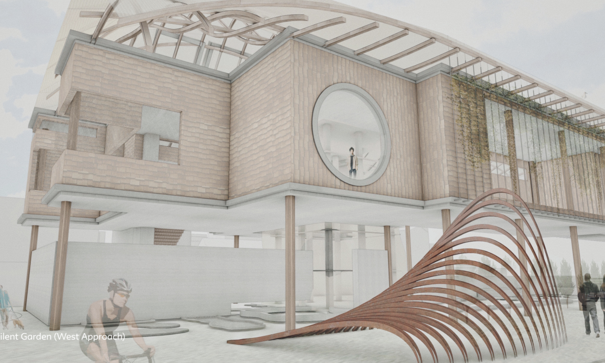

Silent Garden — Red Hook, Brooklyn
Common Language
We explore the intersection between Architecture and Music. Both involve the creative use and misuse of rhythm, texture, harmony, pattern, proportion, and dynamics.
Our fundamental goal is to investigate this relationship through a collaborative making process that constantly re-defines the role of architecture.
News
November 15, 2020
Justin Sherrill was featured on the Parsons School of Constructed Environments blog
October 10, 2020
Our mixed-use residential complex design won second place in New Den-cities competition